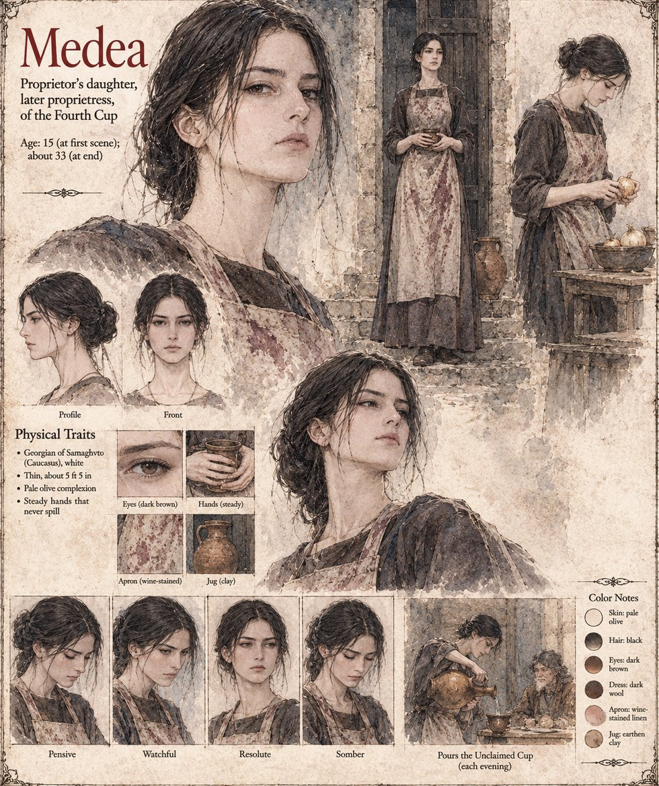

Medea
Proprietor’s daughter, later proprietress, of the Fourth Cup · pourer of the Unclaimed Cup · 15 at the first scene
The best wine-house at the Wine Gate is named for the cup nobody touches. At the Threefold supper table three cups are raised, to the Father, the Mother and the Son, and a fourth is poured to the brim and set at the head of the table, the Unclaimed Cup, for whoever has not yet come, until first light when the host pours it out upon the doorstep. In the Fourth Cup, a cellar older than the Concordat, a thin, unsmiling girl of fifteen named Medea does it each evening at the hour of the lamp, at the empty end of the long table, and nobody ever claims it. She has poured it eleven hundred times by her own count and never spilled a drop, and has begun to suspect that to be the one who pours the cup was the exact opposite of being the one for whom it was poured.
In the Vintage of the fourteenth year, the Little Asker, twenty-three, slips from the procession in a borrowed grey cloak and is found at the kitchen door with an onion and a knife. Medea, who has been told by three priests that day to look on her with reverence, looked at a stranger with a knife and says she is cutting it wrong. They peel four baskets between the lighting of the lamps and the third bell, saying almost nothing, and each of them, being the keeper of a small ritual that nobody understood, finds it the best conversation she has had in a year. Eighteen years later, on the twenty-second of Havren, in a heat that stands on the roofs like a hand, Nestan comes in by the Wine Gate, and Medea, who for no reason she can give has left the Unclaimed Cup standing through the whole shuttered day, finds herself at the black door holding it in both hands. “It was poured for someone,” she says, in the tone of a woman reporting a fault in the accounts, “and I would not like it wasted.” Nestan drinks, a little, only a little, says it is good wine, and gives it back; Medea, who had poured an evening’s wine for twenty years of other people’s theology and never once been thanked by the person it was poured for, goes in, bolts the door and sits for some time at the long table.
The next morning, after the Little Asker is found in the shade of the Hall’s north wall, she pours the cup out upon her doorstep at first light, as the custom requires, and says over the wet stone, for no listener, the only words of the child’s that any tavern ever kept. In the course of a century, in the generations after the Four Crowns, somebody begins to speak them over the fourth cup at the Threefold supper table: Only a little. The manuscript calls it the one thing that survived, under the wrong name.
The manuscript gives her age of fifteen at the first scene and her twenty years at the table, her thinness, her unsmiling face, the cup, the onion, the doorstep and the phrase. The sheet’s age of about 33 at the end, build of about 5 ft 5 in, pale olive complexion, black hair in a low knot, dark brown eyes, wine-stained linen apron over a dark wool dress, clay jug and steady hands are its own, as are its panels Pensive, Watchful, Resolute and Somber. Its scene Pours the Unclaimed Cup (each evening) follows the manuscript; the old man seated at the table behind her is the sheet’s own.
“to be the one who pours the cup was the exact opposite of being the one for whom it was poured”